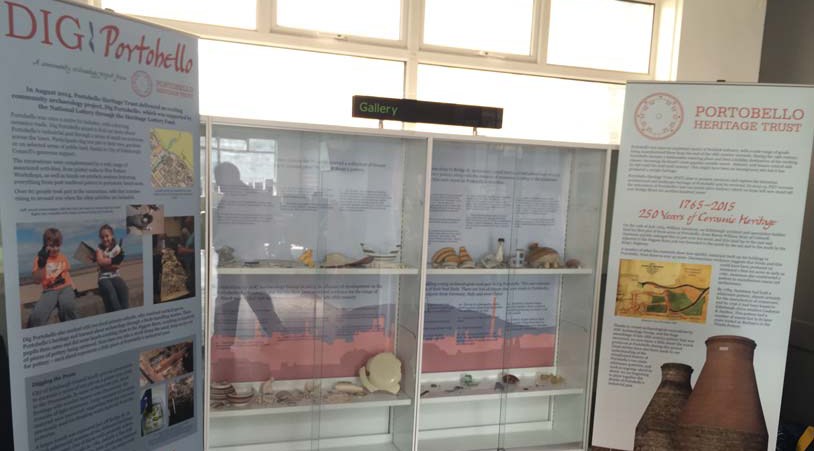

Portobello Heritage Trust Past Events
Dig Portobello
'Dig Portobello' was a great success.

It took place from 29th - 31st August and we had a weekend of wonderful weather, with around 60 volunteers digging test pits and 50 adults and children attending other events. The prom was busy and the test pits on the grassy site attracted much attention from passers-by.
Adults and family groups learned how to dig a test pit. Various structures were found in the grassy area, for example wooden struts resting on bricks created much discussion about what they could be. Suggestions ranged from sleepers for rails for bogies to run on to the foundations for wooden beach huts. Glass and ceramic shards were found, with a rubbish dump excavated late on Sunday afternoon which caused much excitement. An experienced archaeologist took over and dug to about 1.5 metres where shards from the early 1800s were found. These included glazed yellow pieces, possibly from a ceramic dog, which are the earliest of this type found for Portobello.
Several families dug in their gardens and discovered brick walls previously unknown to them and pottery shards. The spread of shards confirms that broken, unwanted pottery was used all over Portobello as infill and that much more remains to be found.
The excavation in the paved square in Bridge Street, beside the Figgate Burn and behind the new flats, revealed more than anyone had anticipated. After discovering a tarred road underneath the decorative brick surface, a small digger was brought in to break through this. Digging revealed several walls dating from different periods, raising questions about what had been sited there over time. More evidence of Portobello’s industrial past had been revealed.
Other events were also popular, with the Wee Pottery Workshops for children fully booked. Children and their parents enjoyed themselves decorating tiles and making pottery bowls and animals. Volunteers washed the many finds and George Haggarty, our renowned ceramics expert, made an initial examination of them. He was delighted at the number of early finds, which show that Portobello was producing fine work earlier than originally believed. He declared that the weekend had exceeded his greatest expectations.
A full report on the dig will be presented at our AGM in April. We would like to thank AOC Archaeology for their enthusiasm and hard work in ensuring the dig and events ran smoothly. Our thanks also go to City of Edinburgh Council for their support, particularly to John Lawson, City Archaeologist, for his advice over the weekend.
Thanks to all who volunteered over the weekend, including those who manned the community centre. We hope you all enjoyed your experiences and have been encouraged to further your knowledge of archaeology. Below is a selection of photographs from the weekend.
Klin Celebration
Klin Community Celebration

On Saturday, 10thMay 2014, around 200 people attended our community event to celebrate the completion of the pottery kiln rebuild. Such a turn-out shows that people do care about the future of the kilns and makes worthwhile the many hours spent ensuring that the rebuild was completed.
Professor John Hume, Chair of the Royal Commission on the Ancient and Historical Monuments of Scotland, cut the ribbon. Dayle Salmon and Dave Martin, the bricklayers who completed the work to such a high standard, travelled from England with their wives to join the celebration. In the photograph are, left to right, Dayle Salmon, Professor Hume, Dr Margaret Munro, Chair of the Trust, Professor Ross Buchan, consultant to City of Edinburgh Council, and Dave Martin.
Music provided by Beyond the Pale enhanced the festival mood. A glass of wine was offered to those who came along. There were stalls selling craft goods; a Trust stall selling our heritage postcards and a new coloured postcard with an artist’s interpretation of the kilns specially created for the event, our DVD ‘It Always Seemed to be Sunny, Memories of Portobello’, booklet Harry Lauder Portobello to the Palace and several Buchan pottery pieces. Director and potter Alison Robinson had a stall where you could make your own brick. All the stalls proved very popular.
The community spirit present in Portobello helped make our event the success it was. We would like to thank Beyond the Pale who played free of charge; Northern Light provided the PA system free of charge; Portobello Open Door provided their marquee free of charge; St. James’s Church provided tables and chairs free of charge and local artist Barbara Hilliam donated her kilns illustration to the Trust. Now that the kiln is rebuilt, we must ensure that future maintenance of the kilns is carried out as agreed by the City of Edinburgh Council.
Kiln ‘Topping Out’ Ceremony
The ‘topping out’ ceremony for the 1909 kiln took place on Wednesday, 20th November 2013. This means that the last brick was laid to complete the external brickwork. The two bricklayers, Dayle Salmon and Dave Martin, have completed the brickwork to a very high standard and now have the inner dome to rebuild.
Councillor Maureen Child and Trust Chair Margaret Munro helped insert the 2013 date brick marking where the rebuilt brickwork started. This meant that those present at the ceremony donned high visibility waistcoats and hard hats before bravely climbing a metal ladder onto the first scaffolding landing, with two climbing to the top to see the new 1909 date brick.
Dayle and Dave were presented with commemorative glazed ceramic plaques, made by potter and Trust Director Alison Robinson, and small flagons, thrown by ex-Buchan potter and Trust member Arthur Jeffery, to mark the occasion.
As the remaining brickwork is internal and protected from the weather, it is hoped that the planned completion date of 20th December will be met.
Portobello Love Stories
Portobello Love Stories
A most enjoyable and very successful reminiscence event was held in Bellfield on Saturday, 10th February, for some of the older members of our community. It was decided to call the event Portobello Love Stories, as Valentine’s Day was fast approaching, and a red and white theme was used to decorate the tables. Afternoon tea was provided for around 60 guests, with volunteers producing many delicious home-bakes. The event was sponsored by Action Porty, Portobello Heritage Trust and Tribe Porty Youth Theatre.
Members of Portobello Older Peoples Project and residents of Spring Gardens Care Home, with their carers and helpers, and members of the congregation from the former Portobello Old Parish Church were invited along to reminisce about their lives. Tamarin Fountain sang songs from the 40s, 50s and 60s and many sang along, with occasional spontaneous dancing. An illustrated slide-show of a day-trip to Portobello was given by Dr Margaret Munro of Portobello Heritage Trust. This helped trigger many happy memories of days spent on Portobello beach. Memory boxes on loan from the Living Memory Association proved very popular, providing articles to handle and discuss around various themes, including school days, days out and shopping. Members of the youth theatre helped serve afternoon tea, with older volunteers pouring the hot drinks. Then, note-books and pens in hand, the youngsters spoke to their guests about their reminiscences. There was a buzz in the hall as different generations chatted and laughed about the stories that were being shared.
The youngsters were later 'de-briefed' and recorded the stories they had been told and their own thoughts on the day.Everyone agreed it had been a most successful event, with new memories created, providing something to talk about in the days ahead. We would like to thank everyone who gave their time to help make this a day to remember.
Find a video of the event below:
Back to events